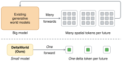
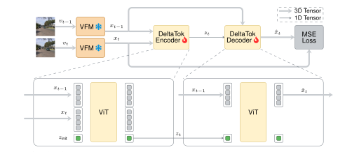
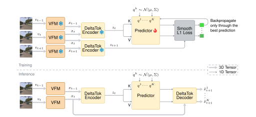
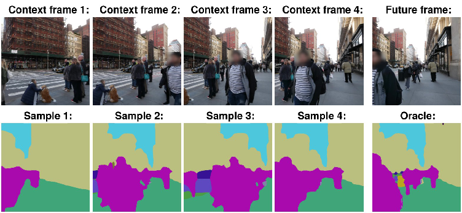
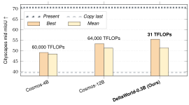

World models are heavy. They don't need to be. Each video frame is typically encoded as many (e.g., 1,024) spatial tokens. What if it were just one?
In this work, we compress frames into "delta" tokens for efficient generative world modeling.

Consecutive video frames are highly redundant.
We train an autoencoder to compress the difference in patch tokens from a frozen vision foundation model (e.g., DINOv3) between consecutive frames into a single delta token.

We use these semantic delta tokens for next-token prediction.
DeltaWorld generates many plausible futures in parallel. During training, only the prediction closest to ground truth is supervised. At inference, this gives diverse predictions in a single forward pass.

DeltaWorld generalizes zero-shot to unseen scenes.
Below, given four context frames, DeltaWorld samples multiple plausible futures that differ in pedestrian motion and camera trajectory.

Despite its simplicity, DeltaWorld performs accurate short- to mid-term forecasting with incredible efficiency.

@inproceedings{kerssies2026deltatok,
title = {A Frame is Worth One Token: Efficient Generative World Modeling with Delta Tokens},
author = {Kerssies, Tommie and Berton, Gabriele and He, Ju and Yu, Qihang and Ma, Wufei and de Geus, Daan and Dubbelman, Gijs and Chen, Liang-Chieh},
booktitle = {Proceedings of the IEEE/CVF Conference on Computer Vision and Pattern Recognition (CVPR)},
year = {2026}
}